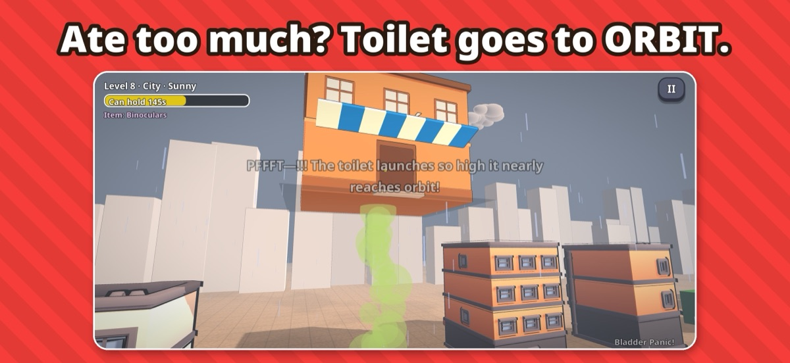
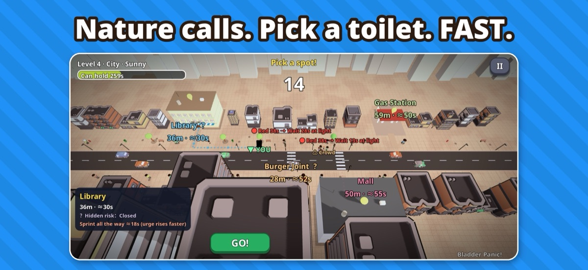
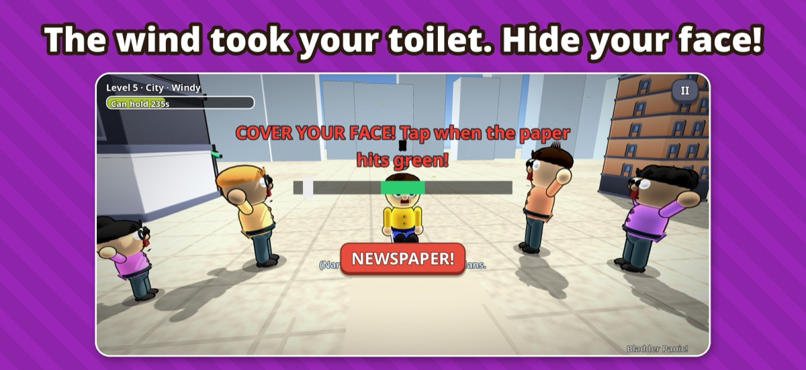
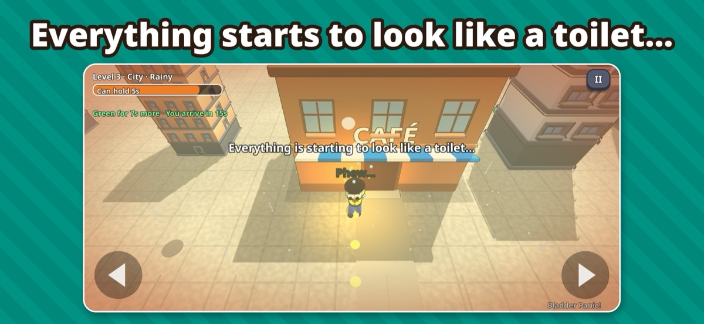
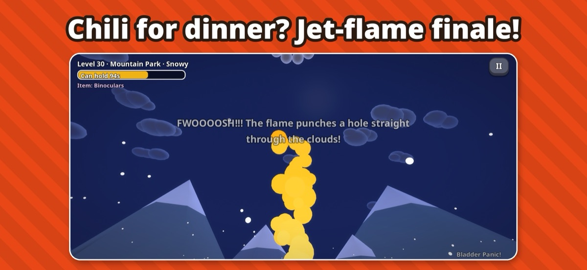
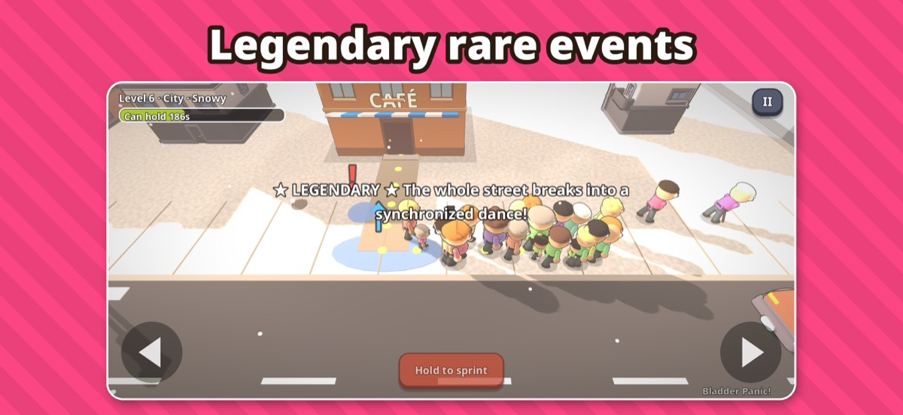

Bladder Panic! — Press Kit
A toilet-finding strategy comedy for iPhone and iPad. When nature calls, time slows and you choose where to go — compare each route's travel time with how long you can hold it, read the hidden risks at every door, then dodge a world of slapstick chaos to make it in time.
Highlights
- Real decisions: travel time vs. bladder, hidden risks revealed at the door, safe vs. risky options — every retry reshuffles, every attempt can be won
- Slapstick everywhere: human dominoes, a goose with a grudge, a toilet blown away by the wind, a quiz-giving toilet attendant, chili-powered jet-flame finale
- 30 levels in 4 worlds, Daily Challenge, Endless Mode, Mishap Book with 70+ collectibles
- Built for iPhone, iPad and iPhone Duo (fold/unfold mid-run, portrait or landscape), Split View and Stage Manager
- Real recorded voices and ambient sound, 14 languages, Game Center
- One-time purchase · No ads · No in-app purchases · No data collected
Screenshots






Facts
Developer: Tianrui Zeng (solo developer)
Platforms: iPhone, iPad
Price: US$4.99
Contact: wallzengboxer@gmail.com